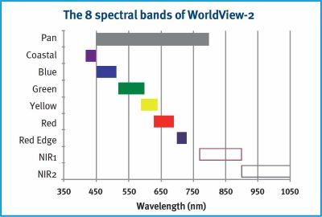

| Import Worldview 2 Products |
|
WorldView-2 provides commercially available panchromatic imagery of 0.46 m resolution, and eight-band multispectral imagery with 1.84 m resolution - representing one of the highest available spaceborne resolutions on the market. Along with the Pan (450-800 nm) and the four typical multispectral bands (blue, green, red, NIR), WorldView-2 has four additional bands for enhanced multispectral analysis (coastal blue, yellow, red edge, NIR2) designed to improve segmentation and classification of land and aquatic features.
It has a wide swath width of 16.4 kilometers, and it is capable of capturing imagery with a high degree of detail.
The satellite's advanced imaging capabilities make it valuable for various applications, including cartography, land cover classification, change detection, and disaster monitoring. Additionally, the agility and maneuverability of the satellite contribute to its versatility in capturing precise and targeted imagery.
WorldView-2 mission characteristics are outlined in the next table:
| Launch Information | Date: October 8, 2009 | ||||||||||||||||||||||||||||||||||||||||
| Launch Vehicle: Delta II 7920 | |||||||||||||||||||||||||||||||||||||||||
| Launch Site: Vandenberg Air Force Base | |||||||||||||||||||||||||||||||||||||||||
| Orbit | Altitude: 770 kilometers | ||||||||||||||||||||||||||||||||||||||||
| Type: Sun synchronous, 10:30 am descending node | |||||||||||||||||||||||||||||||||||||||||
| Period: 100 minutes | |||||||||||||||||||||||||||||||||||||||||
| Sensor Bands |
|
||||||||||||||||||||||||||||||||||||||||
| Sensor Resolution | 0.46 meters GSD at nadir Panchromatic
1.85 meters GSD at nadir Multispectral |
||||||||||||||||||||||||||||||||||||||||
| (GSD = Ground Sample Distance) | 0.52 meters GSD at 20° off-nadir Panchromatic 2.07 meters GSD at 20° off-nadir Multispectral |
||||||||||||||||||||||||||||||||||||||||
| NIIRS Equivalency | NIIRS potential of greater than 5.0 | ||||||||||||||||||||||||||||||||||||||||
| Dynamic Range | 11-bits per pixel | ||||||||||||||||||||||||||||||||||||||||
| Swath Width | 16.4 kilometers at nadir | ||||||||||||||||||||||||||||||||||||||||
| Pointing Accuracy Knowledge | Accuracy: <500 meters at image start and stop | ||||||||||||||||||||||||||||||||||||||||
| Knowledge: Supports geolocation accuracy below | |||||||||||||||||||||||||||||||||||||||||
| Retargeting Agility | Acceleration: 1.43 deg/s/s | ||||||||||||||||||||||||||||||||||||||||
| Rate: 3.86 deg/s | |||||||||||||||||||||||||||||||||||||||||
| Time to slew 200 kilometers: 10 seconds | |||||||||||||||||||||||||||||||||||||||||
| Onboard Storage | 2199 gigabits solid state with EDAC | ||||||||||||||||||||||||||||||||||||||||
| Max Viewing Angle /Accessible Ground Swath | Nominally +/-45° off-nadir = 1651 km wide swath Higher angles selectively available |
||||||||||||||||||||||||||||||||||||||||
| Per Orbit Collection | 524 gigabits | ||||||||||||||||||||||||||||||||||||||||
| Max Contiguous Area Collected in a Single Pass | 138 x 112 km mono 63 x 112 km stereo |
||||||||||||||||||||||||||||||||||||||||
| Revisit Frequency to target at 40° N latitude | 1.1 days at 1 meter GSD 3.7 days at 20° off-nadir or less (0.52 GSD) |
||||||||||||||||||||||||||||||||||||||||
| Geolocation Accuracy (CE90) | Specification of 5 m CE90 at less than 30° off-nadir, with predicted performance in the range of 4.6 to 10.7 meters (15 to 35 feet) CE90, excluding terrain and offnadir effects With registration to GCPs in image: 2.0 m (6.6 feet) |
Coastal Band (400 - 450 nm):
This band supports vegetation identification and analysis, and supports bathymetric
studies based upon its chlorophyll and water penetration characteristics. Also, this band is
subject to atmospheric scattering and will be used to investigate atmospheric correction
techniques.
Yellow Band (585 - 625 nm):
Used to identify "yellow-ness" characteristics of targets, important for vegetation
applications. Also, this band will assist in the development of "true-color"
hue correction for human vision representation.
Red Edge Band (705 - 745 nm):
Aids in the analysis of vegetative condition. Directly related to plant health revealed
through chlorophyll production.
Near Infrared (IR) 2 Band (860 - 1040 nm):
This band overlaps the NIR 1 band but is less affected by atmospheric influence. It
supports vegetation analysis and biomass studies.
This command allows to import WorldView-2 products in GeoTIFF format.
The product must contain at least the metadata file (*_README.XML) and the Product Level Directories.
Product Level Directories are identified with the product ID and a three-character descriptor: PAN for Panchromatic and MUL for Multispectral: <product info>-<product id>
Example: ZON24-PAN
The naming convention for the images is <acquisition time>-<product info>-<product id>.<format extension>i>
The geodetic coordinate system is based on the WGS84 reference frame with coordinates expressed latitude, longitude, and height above the reference Earth ellipsoid.
A brief description of the sensor characteristics can be found at :